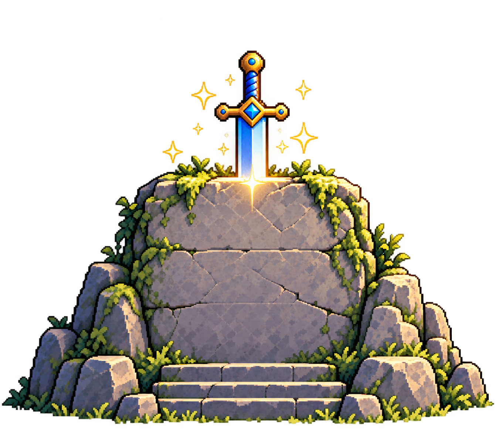

통나무
밧줄을 끊으면 떨어진 뒤 굴러가 몬스터나 다른 기믹에 부딪힙니다.
적은 공격 횟수로 주변 기믹을 이용하여
스테이지 내 모든 몬스터를 처치해야 하는 게임
2D 퍼즐 액션 플랫포머 · PC

↓통나무, 벌집, 거대 버섯을 이용해 몬스터를 처치합니다
밧줄을 끊으면 떨어진 뒤 굴러가 몬스터나 다른 기믹에 부딪힙니다.
밧줄을 끊으면 아래로 떨어져 폭발하고 주변 몬스터를 처치합니다.
닿는 위치에 따라 적과 기믹을 세 방향으로 튕깁니다.
UPTRAND
PC
PC 데모 · 준비 중